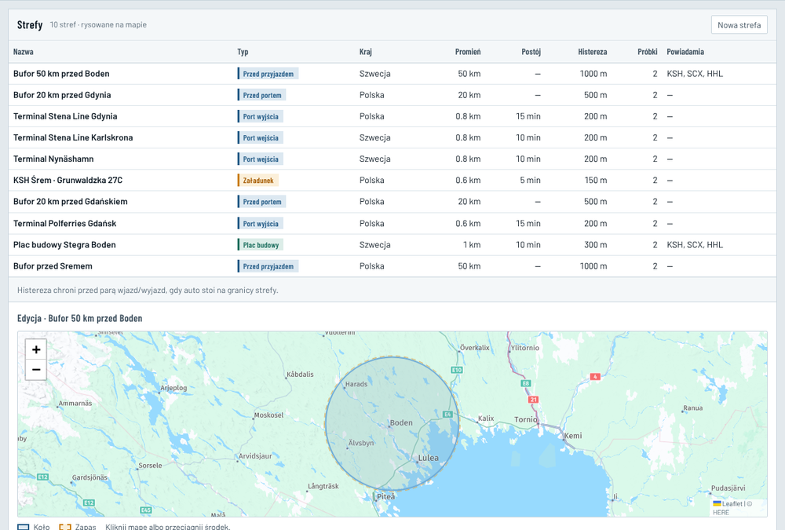
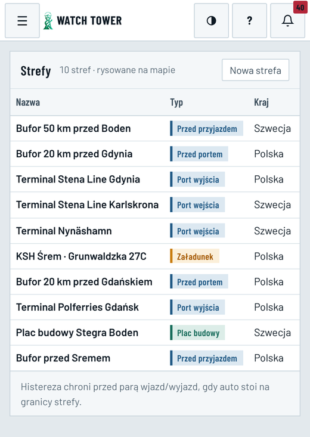
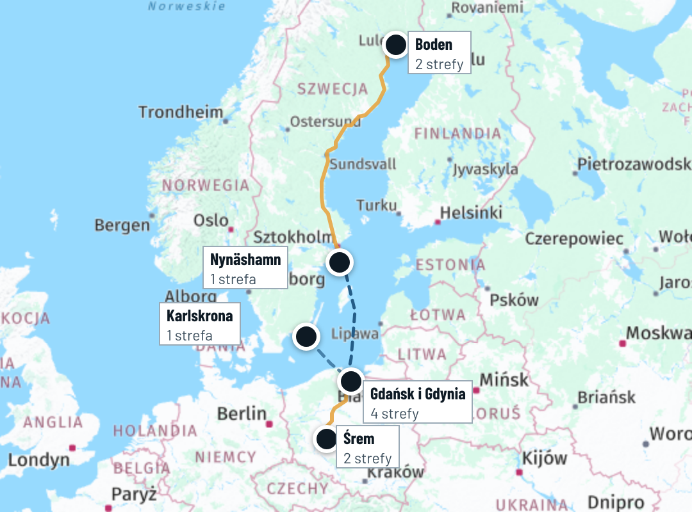
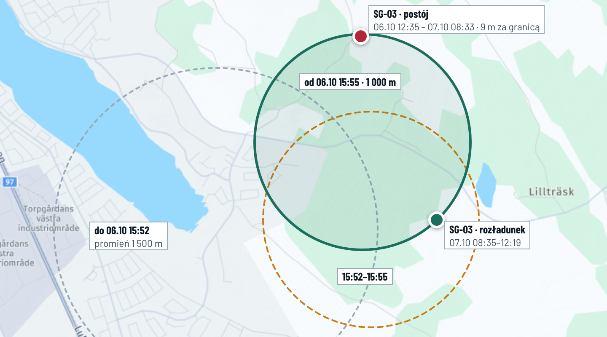

E34 · Strefy · komputer i telefon
„Dziś” — zrzuty 08.10, 01:19, konto Operacje HHL · „po zmianie” — strefy, zdarzenia, historia zmian i pozycje SG-03 z bazy 08.10
Dziś
Strefy · Operacje HHLedycja widoczna, baza nie zapiszebez mapy wszystkich stref

Telefon 390 px

Widać 3 z 8 kolumn: nazwę, typ i kraj. Promienia, czasów i powiadomień nie widać.
Fakty 08.10kod, baza produkcji (tylko odczyt), zrzuty
- 10 stref, wszystkie koła: Śrem 600 m i bufor 50 km; terminal Gdańsk 600 m i bufor 20 km; terminal Gdynia 800 m i bufor 20 km; Nynäshamn 800 m; Karlskrona 800 m; plac Boden 1 000 m i bufor 50 km. Kolejność jest przypadkowa (wszystkie mają porządek 0, jedna 5). Nazwy z błędami: „Bufor 20 km przed Gdynia”, „Bufor przed Sremem”. Promień zapisany z kropką: „0.8 km”.
- Co uruchamiają: wjazd do Śremu daje „Załadunek” (z „Gotowy”), wyjazd „Droga PL”. Wjazd do terminalu PL daje „Port Gdańsk”, także w Gdyni. Wjazd do terminalu SE daje „Port Nynäshamn”, także w Karlskronie. Wjazd na plac daje „Na placu”. Bufor przed portem daje powiadomienie HHL (Automatyzacje). Bufory 50 km służą do SMS i do stanu „czeka przed placem”. Strony tego nie pokazują.
- Port według trasy: ETA bierze „pierwszy” terminal SE według porządku stref. Ten porządek jest wszędzie 0, więc nie wiadomo, czy dla trasy Stena liczy do Karlskrony, czy do Nynäshamn. To samo dotyczy terminalu PL.
- Zmiany stref: 06.10, 15:52 Administrator HHL przesunął strefę placu Boden o 1 449 m i zmniejszył ją z 1 500 do 1 000 m. O 15:55 przesunął ją jeszcze o 726 m, a bufor 50 km o 4 km, i ustawił powiadomienia. 05.10 zmniejszył terminal Gdańsk z 800 do 600 m. Strona nie pokazuje historii zmian ani powodu.
- Poprawka do E15: SG-03 zaparkował 06.10 o 12:35. Wtedy strefa placu była w innym miejscu i auto stało 756 m poza nią. „Ok. 9 m od granicy” to odległość od strefy narysowanej o 15:55. Nowej pozycji nie było do 07.10 08:33, więc zmiana strefy niczego nie przeliczyła. Wniosek E15 („czeka przed placem”) zostaje.
- Zdarzenia stref: jest ich 7 w całej bazie. 6 dotyczy SG-03: wyjazd ze Śremu ustalony przy podłączeniu w Szwecji, bufor Boden, wjazd na plac 07.10 08:35, pobyt, wyjazd 12:19. 1 dotyczy SG-24: bufor Gdańsk 01.10 z aplikacji kierowcy.
- Uprawnienia i wygląd: edytor otwiera się każdemu kontu HHL, ale baza zapisze tylko Administratora (E9: Operacje — podgląd). Kolumny „Histereza”, „Próbki” i „Postój” nie są wyjaśnione. Edytor ma rodzaje „Punkt kontrolny” i „Postój” oraz kraje Litwa i Niemcy, których nie ma w żadnej strefie. Jest „Usuń strefę”. Menu ma liczbę „10” (E9: bez liczby). Powiadomienia ustawia się przy strefie (KSH, SCX, HHL), osobno od Opcji › „Kto co dostaje” (E11).
Po zmianie · komputer · Administrator HHL
Strefy10 · według trasy+ Strefa

Śrem · załadunek
Bufor 50 km przed Śrememzbliżanie · SMS do Śremu (E42)
—KSH Śrem · Grunwaldzka 27C600 m · wjazd → Załadunek · wyjazd → Droga PL · czas wolny 6 h
SG-03 wyjazd 05.10Gdańsk · Polferries → Nynäshamn
Bufor 20 km przed Gdańskiempowiadomienie HHL (Automatyzacje)
SG-24 wjazd 01.10Terminal Polferries Gdańsk600 m · wjazd → Port PL
—Gdynia · Stena → Karlskrona
Bufor 20 km przed Gdyniąpowiadomienie HHL (Automatyzacje)
—Terminal Stena Line Gdynia800 m · wjazd → Port PL
—Porty w Szwecji
Terminal Nynäshamn800 m · trasa Polferries · wjazd → Port SE · wyjazd → Droga SE
—Terminal Stena Line Karlskrona800 m · trasa Stena · wjazd → Port SE · wyjazd → Droga SE
—Boden · rozładunek
Bufor 50 km przed Bodenzbliżanie · SMS do Boden (E42) · „czeka przed placem” (E15)
SG-03 wyjazd 07.10Plac budowy Stegra Boden1 000 m · wjazd → Na placu · wyjazd → Dostarczone (E26) · czas wolny 4 h
SG-03 wyjazd 07.10Ostatnie zdarzenie przy każdej strefie. Kolejność według trasy, a nie przypadkowa.
Plac budowy Stegra BodenPlacSzwecja · koło 1 000 m · teraz w strefie: 0Zmień strefęWyłącz

Margines granicy300 mchroni przed fałszywym wjazdem i wyjazdem przy granicy (dziś „Histereza”)
Potwierdzenie2 pozycjez rzędu w strefie albo poza nią (dziś „Próbki”)
Pobyt10 minw strefie liczy się jako pobyt (dziś „Postój”)
Co robi ta strefa
- Wjazd: status „Na placu” (E25) i SMS „wjazd” do odbiorców Boden (E42).
- Wyjazd po co najmniej 10 min: „Dostarczone” i koniec śledzenia (E26, E27).
- Postój ponad 4 h jest liczony do dopłaty (E33). Powiadomienia działają według Opcji › „Kto co dostaje” (E11).
Historia zmian
- 06.10, 15:55 · Administrator HHL · środek przesunięty o 726 m · powiadomienia: KSH, SCX, HHL · powód: — (dziś pole nie istnieje)
- 06.10, 15:52 · Administrator HHL · środek przesunięty o 1 449 m · promień 1 500 → 1 000 m
- 25.09 · utworzona · promień 1 500 m
Kliknięcie wpisu pokazuje poprzedni kształt na mapie (szare i pomarańczowe koło). Punkty SG-03 pochodzą z pozycji GPS.
Po zmianie · zmiana strefy, kto co widzi, telefon
Zmiana strefy · Plac budowy Stegra Bodenodtworzenie 06.10 15:55
Kto co widzi i robi
- HHL Administrator dodaje, zmienia i wyłącza strefy. Podaje powód, a zmiana trafia do historii. Usunięcia nie ma, gdy strefa ma zdarzenia — jest wyłączenie.
- HHL Operacje tylko oglądają (E9). Przycisków edycji nie ma, tak jak w bazie.
- KSH i SCX nie mają menu Strefy. Na Mapie widzą warstwę „Strefy” z nazwami (E29).
- Porty według trasy: rejs Polferries — Gdańsk i Nynäshamn, rejs Stena — Gdynia i Karlskrona. Statusy i ETA biorą porty z rejsu transportu.
- Zostaje 6 rodzajów, które działają. „Punkt kontrolny” i „Postój” znikają, a w kraju tylko Polska i Szwecja.
- Nazwy są poprawione („przed Gdynią”, „50 km przed Śremem”), a liczby po polsku („0,8 km”). Menu nie ma liczby (E9).
☰Strefy10
Boden · rozładunek
Plac budowy Stegra Boden
1 000 m · ostatnio SG-03 07.10›
Bufor 50 km przed Boden
zbliżanie · SMS do Boden›
Śrem · załadunek
KSH Śrem · Grunwaldzka 27C
600 m · wjazd → Załadunek›
Karty według miejsca. Stuknięcie otwiera mapę strefy, opis i historię na cały ekran. Administrator może tam też zmienić środek i promień.